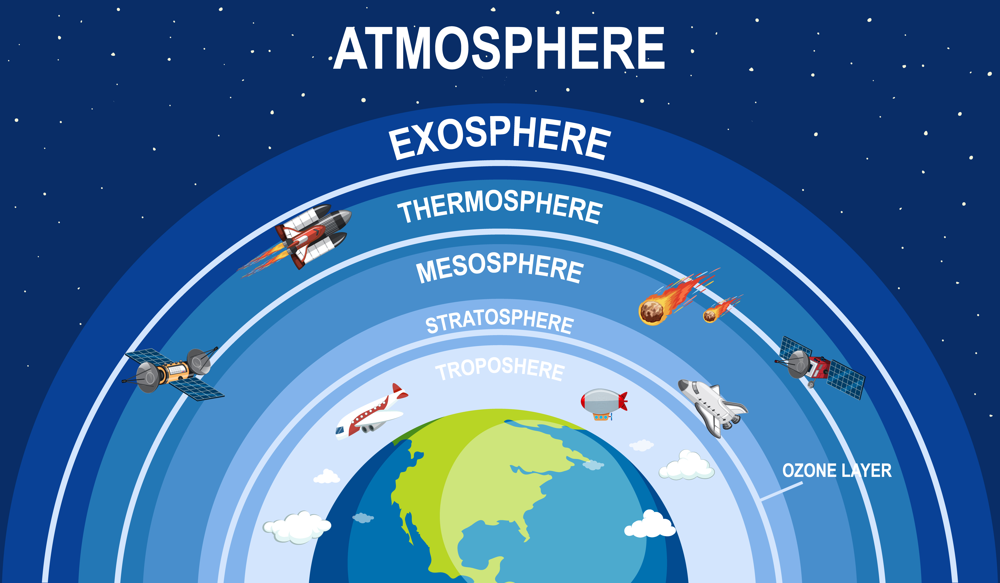

Capas de la atmósfera
- Troposfera
- Estratosfera
- Capas exteriores
| Capa | Altura |
|---|---|
| Troposfera | hasta 12km |
| Estratosfera | entre 12 y 50km |
| Mesoesfera | entre 50 y 85km |
| Termoesfera | entre 80 y 500km |
| Exosfera | a partir 500km |

Atmósfera
La atmósfera terrestre es la parte gaseosa de la Tierra, siendo por esto la capa más externa y menos densa del planeta. Está constituida por varios gases que varían en cantidad según la presión a diversas alturas. Esta mezcla de gases que forma la atmósfera recibe genéricamente el nombre de aire.